Regenerative Cooling
As shown in previous sections, temperatures inside the Large Throat Main Combustion Chamber (LTMCC) can exceed 3600 Kelvin. In order to withstand this harsh environment, the combustion chamber must be constructed from a material with excellent heat conduction characteristics and a high melting point. Simultaneously, this material must also have a high strength-to-weight ratio and not be too hard, tough, or brittle to complicate the manufacturing process. Engineers at North American Rockwell developed an interesting alloy to solve this problem. NARloy-Z consists primarily of copper with the addition of approximately 3% silver and 0.5% zirconium. This alloy retains copper’s excellent ability to conduct heat and improves upon its its strength and fatigue characteristics.[67] The final hurdle to overcome is melting temperature. NARLOY-Z still melts at about 1000 K, which is obviously much less than the 3600 K found inside the LTMCC. Engineers solved this problem by manufacturing a regeneratively cooled combustion chamber. Cryogenic hydrogen enters the LTMCC aft manifold and flows into a set of 430 high aspect ratio coolant passages evenly dispersed around the chamber’s circumference.[68] As coolant flows through these channels toward the nozzle injector face, the high thermal conductivity of NARloy-Z allows heat to easily pass through the walls of the chamber and be carried away by the extremely cold hydrogen. This designs maintains the wall at a temperature below its melting point while simultaneously increasing the enthalpy of the hydrogen as it is routed into the combustion chamber. The figures below show a schematic of the LTMCC regenerative cooling system, along with a plot of how channel dimensions vary along the length of the chamber. Refer to Figure 1.1.1 for a global view showing how the coolant inlet manifold (Station 8) and outlet manifold (Station 9) integrate within the SSME fuel system as a whole.
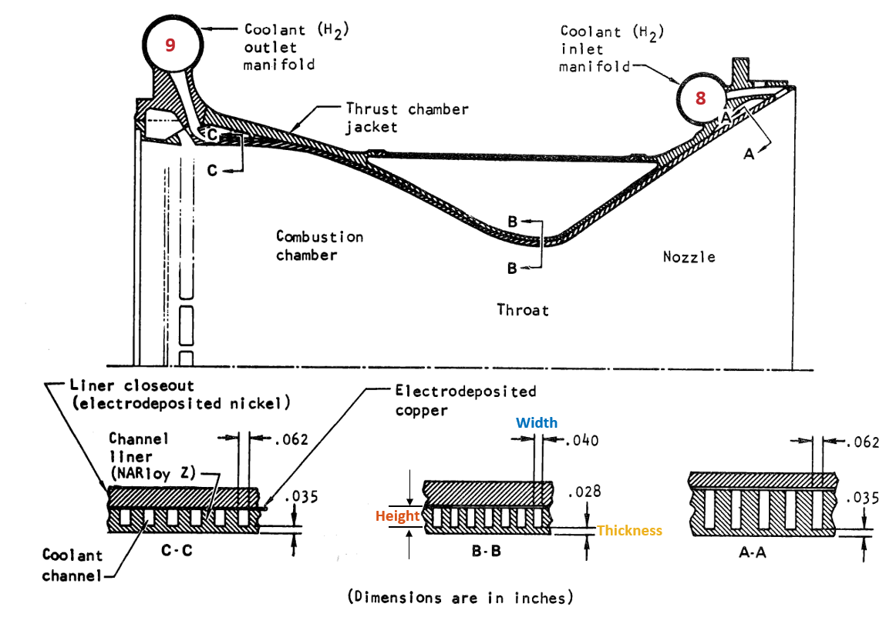
Figure 6.1.1: LTMCC Regenerative cooling Circuit[58]
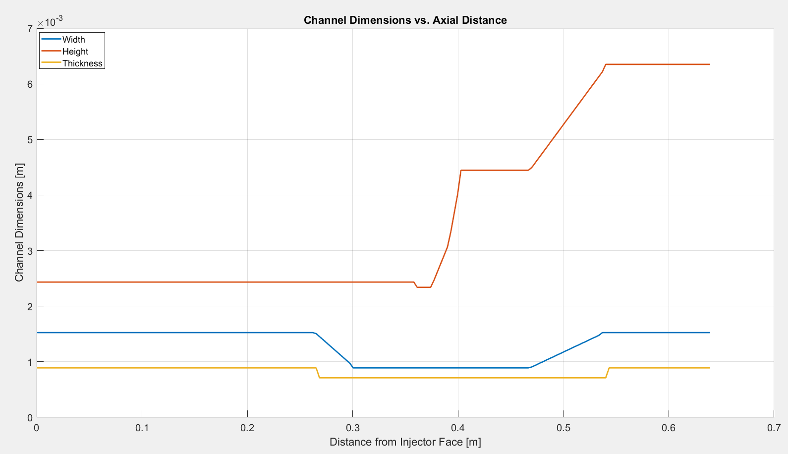
Figure 6.1.2: LTMCC Wall Channel Dimensions[69]
In Section 5.3 we developed an algorithm to determine the the properties of the exhaust gas flowing through the LTMCC. We can combine this algorithm with the coolant channel geometry data shown above to initiate a coupled heat transfer analysis. There are three simultaneous equations that must be solved:[38]
The first two of these equations represent Newton’s Law of Cooling applied to the LTMCC. They account for convective heat transfer. Equation 6.1.1 says that the amount of heat transferred from the exhaust gas flowing through the LTMCC into the LTMCC’s inner wall ($q_{gas}$) is equal to the gas heat transfer coefficient ($h_{gas}$) multiplied by the surface area of the combustion chamber interior ($A_{gas}$) and the difference between the adiabatic wall temperature ($T_{aw}$) and the hot wall temperature, ($T_{hw}$). Adiabatic wall temperature is the temperature that would exist on the inner wall of the LTMCC if the wall was perfectly insulated and no heat transfer was possible. The “hot wall” temperature, $T_{hw}$, is the true temperature of the inner surface of the LTMCC.
Equation 6.1.2 is Newton’s law of cooling applied to one of the hydrogen coolant channels. $q_{H_{2}}$ is the total amount of heat transferred from the channel walls into the liquid hydrogen coolant. $h$ represents the convective heat transfer coefficient and $A$ is the wetted surface area of the cooling channel. $T_{H_2}$ is the bulk temperature of the liquid hydrogen flowing through the channel. $T_{cw}$ is the temperature of the “cold wall,” the the bottom surface of the cooling cooling channel. The cold wall and the hot wall of the LTMCC are separated by the “thickness” shown above in Figures 6.1.1 and 6.1.2.
The final equation is Fourier’s Law. It accounts for heat conduction between the hot wall and cold wall. $k$ is the thermal conductivity of the NARloy wall. $A$ is the surface area of the wall, and $\partial T / \partial y$ is the temperature gradient between the hot and cold walls.
As the exhaust gas flows down the nozzle, heat is transferred from the gas into the hot wall. All of this heat is conducted through the hot wall and into they hydrogen coolant. Therefore $q_{gas}=q_{wall}=q_{H_2}$. Solving these three simultaneous equations will reveal the wall temperature profile from the injector face to the nozzle exit plane, and provide the expression for $Q(x)$ needed to close the system of “quasi one-dimensional” flow equations established in Section 5.3. We will begin by refining the expression for the amount of heat transferred from the combustion gas into the chamber wall: Equation 6.1.1.
Equation 6.1.1
The geometry of the LTMCC is known from Section 5.1 which facilitates calculation of the chamber’s inner surface area, $A_{gas}$. Table 5.1.2 provides the radius of the LTMCC at any given station along the length of the LTMCC. If we discretize the LTMCC into a finite number of segments of width $dx$ (as shown in Figure 5.3.1), the surface area of an segment $dx$ is simply that of a cylinder:
The $N_{cc}$ term in the denominator of this equation represents the number of cooling channels the arrayed around the cylinder’s circumference. We will perform this analysis and estimate the amount of heat transferred in a single cooling channel. Therefore the surface area contained in the numerator is divided by the number of cooling channels, in this case 430.
The convective heat transfer coefficient, $h_{gas}$ is significantly more complex to model. We turn to the Bartz Equation:[70]
Solving this equation requires the use of nearly every function described in the previous sections of this website. Table 6.1.1 names each variable and provides a cross-reference to the additional equations needed to perform the calculation.
| Variable | Name | Calculation Procedure |
|---|---|---|
| $D_t$ | LTMCC Throat Diameter | Figure 5.1.10 |
| $\eta$ | Combustion Gas Viscosity | Equation 2.6.13 |
| $C_p$ | Combustion Gas Specific Heat | Equation 2.4.1 |
| $\lambda$ | Combustion Gas Thermal Conductivity | Equation 2.6.12 |
| $Pr$ | Combustion Gas Prandtl Number $\frac{C_p\,\eta}{\lambda}$ | Section 2.6 |
| $p_c$ | Stagnation Pressure | Eqns 5.3.1 - 5.3.3 |
| $c^*$ | Characteristic Velocity | Equation 3.4.1 |
| $R_U$ | Wall Radius of Curvature at Throat | Figure 5.1.11 |
| $A$ | Cross-Sectional Area at Station $x$ | Table 5.1.2 |
| $A_t$ | Throat Cross-Sectional Area | Figure 5.1.10 |
| $T_s$ | Stagnation Temperature | Eqns 5.3.1 - 5.3.3 |
| $\gamma$ | Combustion Gas Specific Heat Ratio | Section 3.3 |
| $M$ | Mach Number | Eqns 5.3.1 - 5.3.3 |
Table 6.1.1
The heat transfer coefficient predicted by the Bartz equation is very sensitive to the hot gas transport properties (viscosity, $\eta$, and thermal conductivity, $\lambda$) used as inputs. The models for these transport properties developed in Section 2.6 provide accurate results, as long provided they are provided the correct temperature to initiate the calculation. This raises the question, what is the correct temperature to calculate the hot gas transport properties at? Should the free-stream hot gas temperature be used? Or the temperature of the hot wall? The difference between these two temperatures can be on the order of several thousand Kelvin, which will drastically alter the the results returned by the transport property models. To resolve this problem a “reference temperature,” $T^*$, is utilized:[17]
where $T$ and $M$ correspond to the free stream temperature and Mach number of the combustion gas.
Evaluating the hot gas transport properties at $T^*$ gives good results. But this raises yet another question. Must a similiar method be used account for transport properties of the liquid hydrogen in the coolant channels? What temperature should those properties be calculated at? Again, there can be a significant difference between the bulk tempertuare of the fluid (50-300 K) and the cold wall temperature (400-600 K). In this case a “film temperature,” $T_f$ is used to calculate transport properties:
Returning to Equation 6.1.1, there is still one more variable requiring elaboration: adiabatic wall temperature, $T_{aw}$.[38]
Equation 6.1.2
After defining all of the variables needed to account for the heat transferred from the combustion gas, we are ready to move on to Equation 6.1.2 and account for how this heat is absorbed by liquid hydrogen flowing through the LTMCC cooling channels. The first variable of interest in Equation 6.1.2 is $h_{H_2}$, the liquid hydrogen heat transfer coefficient. It is defined as follows:
where $D_h$ is the hydraulic diameter of the cooling channel and $Nu$ is the local Nusselt Number. Nusselt number is a quantity that describes the ratio of conductive heat transfer to convective heat transfer into the hydrogen coolant.[71] It is modelled by the following correlation for hydrogen: [72] [73]
The variables $f$ and $R_e$ represent the local friction factor and Reynold’s number in the cooling channel. These values can be determined through use of Equation 5.3.9 and Figure 5.3.2 .
$B\left(\epsilon^*\right)$ is a piecewise function:
The coefficients $C_1$, $C_2$, and $C_3$ account for wall surface roughness, effects in the thermal entrance region, and secondary flows due to channel curvature, respectively.[74]
In the above equations, the variable $\xi$ is the ratio of rough wall friction factor to smooth wall friction factor. These friction factors can be evaluated with Equation 5.3.9 and Figure 5.3.2 . For these calculations, the average surface roughness of the channel wall, $e$ is required. For NARloy-Z, $e$ is approximately $2.5\times10^{-7}$ meters.[69]
The variable $s$ in Equation 6.1.13 represents the linear distance hydrogen has flowed since entering the cooling channel at the inlet manifold.
The variable $R$ in Equation 6.1.14 represents channel wall’s radius of curvature at station $x$. The exponent values correspond to the sign of the local concavity. The variable $C_3$ is only applied to stations where the wall curvature has a finite value (i.e. the curved regions corresponding to $R_I$, $R_U$, and $R_D$ on Figure 5.1.11)
The final term of interest in Equation 6.1.2 is $A_{H_2}$, which represents the wetted surface area of the channel interior. Each channel has a rectangular cross section of width $W$ and height $H$ (see Figure 6.1.1). As was done for the LTMCC interior surface in Equation 6.1.4, the cooling will be discretized channel into multiple segments of length $dx$. Therefore the wetted surface area of each channel segment becomes:
This expression for surface area does not quite tell the entire story. Equation 6.1.2 shows that the temperature difference between the channel’s cold wall ($T_{cw}$) and the bulk temperature of the hydrogen coolant ($T_{H_2}$) is the primary factor driving the convective heat transfer. If the assumption is made that the entire surface $A_{H_2}$ is maintained at the cold wall temperature $T_{cw}$ the model will greatly over-predict the amount of heat transferred into the hydrogen coolant. We must account for the temperature distribution due to conduction along the channel’s walls. This is accomplished by approximating the vertical walls of the channel as thin rectangular fins. The “thin” assumption implies that temperature distribution along the length of each vertical channel wall is one-dimensional. The vertical walls will have a temperature of $T_{cw}$ at their base, and this temperature will decay as a function of height, $H$, above the bottom of the coolant channel. We will also make the assumption that the upper surface of the channel is well insulated. This means that there is no heat flux through the top of the coolant channel. The figure below provides a depiction of this heat transfer model with red arrows depicting flux.
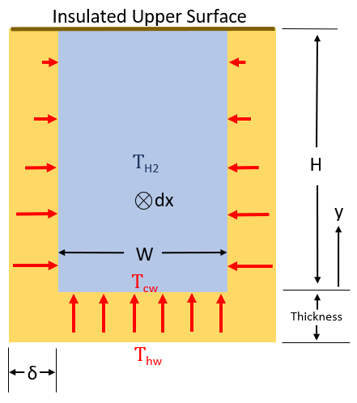
Figure 6.1.3: Convective Heat Transfer Model
In order to determine the heat flux into the hydrogen coolant we must derive expressions for the temperature profiles along the channel’s two vertical walls and its horizontal base. The horizontal wall is easy. We assume it stays at a uniform temperature of $T_{cw}$. The temperature distribution up the vertical walls takes a bit more work. Returning to the “thin fin” assumption, Fourier’s law of conduction can be used to establish a differential equation for the temperature of the vertical wall at a distance $y$ above the channel floor:[75]
The areas $A_c$ and $A_s$ in Equation 6.1.16 correspond to the cross-sectional area and surface area of the vertical wall. The vertical wall has a rectangular profile, so $A_c$ is simply $\delta dx$. $A_s$ is the surface area of the vertical wall that is exposed to the hydrogen coolant. Remembering to account for both sides of the wall, the expression for $A_s$ then $2\cdot y \cdot dx$.
This differential equation is subject to the following boundary conditions:
Equation 6.1.16 can be solved analytically for simple geometries such as a rectangular fin with uniform cross-section. Reference [75] contains a detailed procedure on how to perform this calculation. We will neglect the details and skip directly to the results. The solution to Equation 6.1.16 gives the temperature profile of the vertical channel wall from $y=0$ to $y=H$. Using this temperature profile, a “fin efficiency” can be established that will serve as a correction factor for the surface area described in Equation 6.1.12. The efficiency of a thin rectangular fin is modelled as follows:
In Equation 6.1.18, $k$ is the thermal conductivity of NARloy-Z, 316 $W/m\cdot K$,[69] , and $\delta$ is the width of the vertical channel wall, as shown above on Figure 6.1.3. The length $L_c$ is the “corrected” length of the vertical wall used to impose the adiabatic tip boundary condition:[75]
Now that we have the efficiency of the thin rectangular fin serving as the channel wall, we can return to Equation 6.1.15 and update the expression for the inner surface area of the coolant channel. We made the assumption that upper surface of the channel is well insulated. This means we can remove the area of the upper surface from this calculation. The vertical walls are not at a uniform temperature, but we can correct for this by multiplying their surface area by the fin efficiency calculated with Equation 6.1.15. The final expression for $A_{H_2}$ then becomes:
Equation 6.1.3
Equations 6.1.1 and 6.1.2 accounted for convective heat transfer in the LTMCC. The final heat transfer equation to be discussed, Equation 6.1.3, accounts for conductive heat transfer between the “hot” and “cold” walls of the LTMCC. The hot wall is the inner surface of the chamber that is exposed to the combustion gas. The cold wall is the bottom surface of the hydrogen coolant channel. These walls are separated by the “thickness” shown in Figures 6.1.1 and 6.1.3. Fortunately Equation 6.1.3 does not require nearly as much elaboration as the two previous convective equations! There is only one new variable to introduce: the temperature gradient between the hot and cold surfaces.
Solution Procedure
We now have enough information to solve the governing heat transfer relationships established with Equations 6.1.1 - 6.1.3. The first law of thermodynamics says that energy must be conserved. Therefore $q_{gas}=q_{H_2}=q_{wall}$. In these equations (and all of the sub-equations required to complete them), the only unknown variables are are the hot and cold wall temperatures, $T_{hw}$ and $T_{cw}$. We can establish a system of two equations and solve for these two unknowns using a multi-variable Newton-Raphson algorithm:
This algorithm requires differentiating $f_1$ and $f_2$ with respect to both $T_{cw}$ and $T_{hw}$. Due to all of the linked equations that go in to $f_1$ and $f_2$ it is not practical to derive an analytic solution. These derivatives must be calculated numerically. Fortunately this is an identical procedure to that described for the combustion model in Section 3.3.
The algorithm is initiated by dividing the axis of the LTMCC into 200 increments of length $dx$. An isentropic solution for the combustion gas flow through the nozzle is then computed using the procedure described in Section 5.3. The resulting gas properties at each station $dx$ are then input into the heat transfer model described in this section. The initial temperature of the liquid hydrogen entering the coolant inlet manifold at Station 8 is known. This temperature is assumed to remain constant over the length of the first channel segment $dx$. The Newton-Raphson algorithm will guess values for $T_{cw}$ and $T_{hw}$ until the residuals of Equations 6.1.22 and 6.1.23 converge sufficiently close to zero, indicating the correct wall temperatures have been reached. The coolant temperature entering station $dx_{i+1}$ is then calculated as follows:[73]
where $\dot m_{H_2}$ is the mass flow rate of hydrogen entering the coolant inlet manifold (13.2 kg/s for the LTMCC at 104.5% power), $C_p$ represents isobaric heat capacity, and $N_{cc}$ is the number of coolant channels arrayed round the perimeter of the chamber (430 for the LTMCC or 390 for the STMCC).
The pressure drop between coolant stations, $\Delta P$ , is calculated as follows:[73]
$\Delta P_1$ accounts for “major losses” from viscous pressure drop due to the surface roughness of the channel walls:
$\Delta P_2$ accounts for “minor losses” due to expansion and contraction of the cooling channel hydraulic diameter:
where the value of $K$ depends on the contraction or expansion ratio moving upstream into the next channel section $dx$. For expansions:
For contractions:
$\Delta P_3$ models changes in pressure due to fluid acceleration:
where $A_i$ corresponds to the cross-sectional area of the coolant channel at station $dx_i$
The hydrogen coolant pressure at the next station upstream is then calculated as follows:
This entire process is repeated at the next channel segment, $dx_{i+1}$ using temperatures $T_{hw}$ and $T_{cw}$ at station $dx_{i}$ as the initial guess to initiate the Newton algorithm. Typically about 30 iterations are required to obtain convergence at each segment $dx$. After the wall temperature and flux profiles have been determined along the length of the entire LTMCC axis, the program returns to the compressible flow model in Section 5.3 and solves for $Q(x)$ with Equation 5.3.5. The flow model (Equations 5.3.1 - 5.3.3) is then re-solved with the the $Q(x)$ terms included. This results in new hot gas flow properties along the the length of the chamber. These flow properties are then imported back in to the heat transfer model described in this section, and the entire process is iterated until global convergence is obtained. Flow properties at the exit of the LTMCC are then used to initiate both the gas flow model and heat transfer model downstream of the nozzle attach flange (see Figures 5.1.11 and 5.2.5). Results for the nozzle proper are presented in the following section.
Results
Most literature presents data for the Standard Throat Main Combustion Chamber (STMCC) operating at the Full Power Level (FPL) of 109%, rather than the Large Throat Main Combustion Chamber (LTMCC) studied in this analysis at the Nominal Power Level (NPL) of 104.5%. In order to validate the LTMCC model developed on this website it was first necessary to generate results corresponding to STMCC geometry and inlet conditions at 109%. Plots of the temperature, heat flux, and heat transfer coefficient in the STMCC predicted by this model at 109% power level are shown below. Table 6.1.2 contains predictions from literature for comparison.
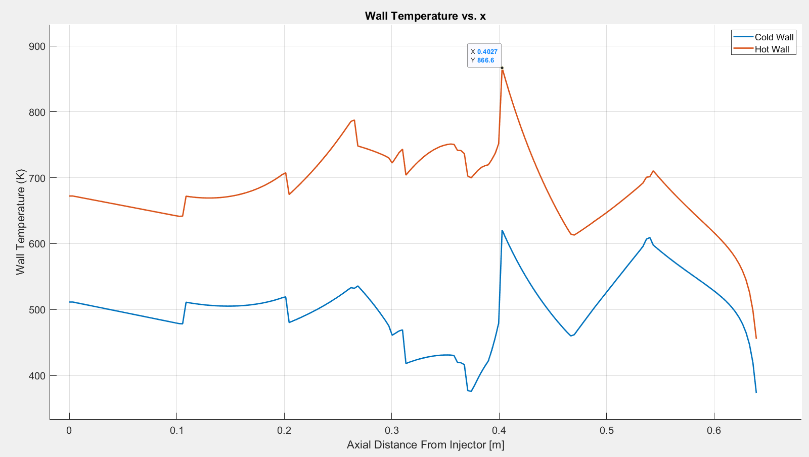
Figure 6.1.4: STMCC Wall Temperatures at 109%. Spikes in temperature correspond to changes in channel geometry.
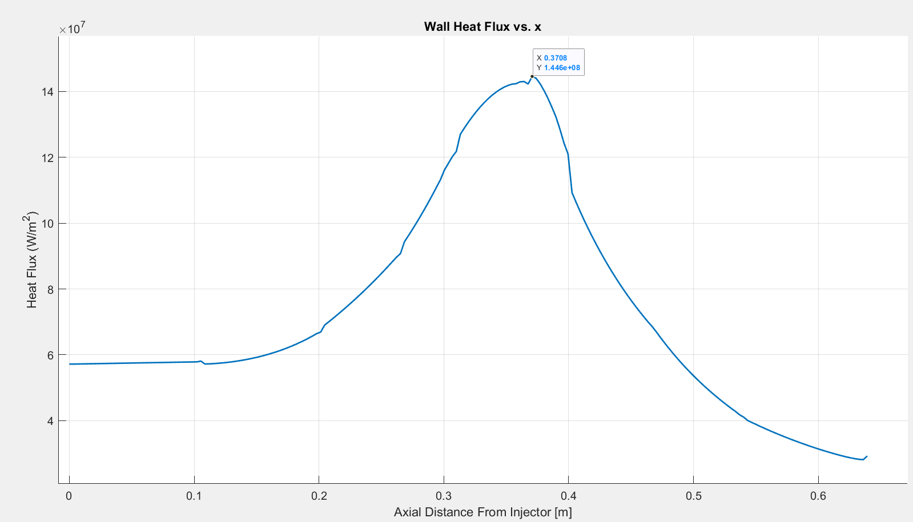
Figure 6.1.5: STMCC Hot Wall Heat Flux at 109%
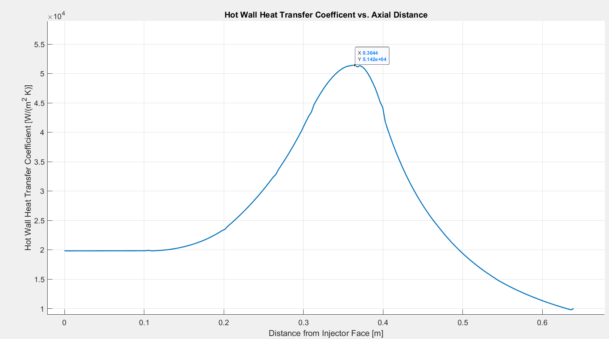
Figure 6.1.6: STMCC Hot Wall Heat Transfer Coefficient at 109%
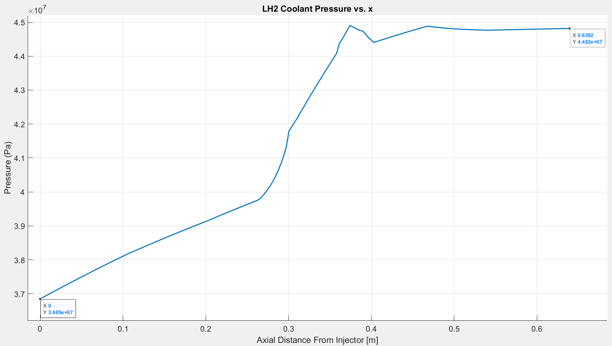
Figure 6.1.7: STMCC Coolant Pressure at 109%
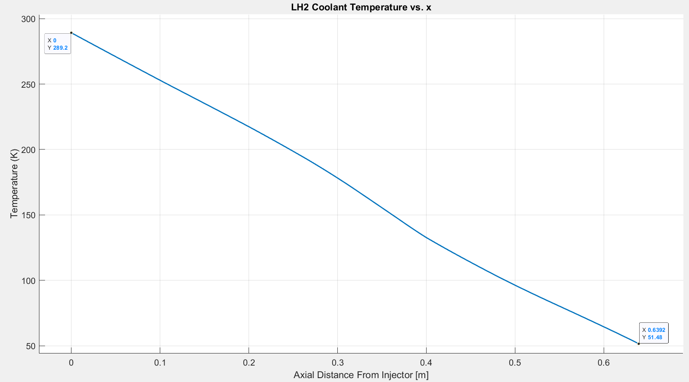
Figure 6.1.8: STMCC Coolant Temperature at 109%
| This Model | Wang[72] | Naraghi[76] | Pizzarelli[77] | Betti[69] | |
|---|---|---|---|---|---|
| Peak Hot Wall Temperature, [$K$] | 866 | 855 | 710 | 1196 | 1071 |
| Peak Heat Flux [$MW/m^2$]$ | 144 | 138-163 | 163 | 159.7 | 143-147 |
| Peak Heat Transfer Coefficient $[\frac{kW}{m^2K}]$ | 51.4 | - | - | 64 | 57 |
| Coolant $\Delta P$, $MPa$ | 7.97 | 9.12 | 17.6 | 8.7 | 8.6 |
| Coolant $\Delta T$, $K$ | 237 | 201 | 319 | 240 | 215 |
Table 6.1.2: Predictions for Standard Throat Configuration at 109%
There is a fairly wide range of uncertainty in the comparison values shown above. Nevertheless, the results from the model developed on this website fall in line with the general trends reported in from these references, which provides high confidence in the accuracy of the model. The Betti and Pizzarelli models both state that their predicted maximum wall temperatures are significantly higher than expected. The wall temperature reported by Naraghi is significantly less than the value reported by Wang. The Naraghi model appears to predict higher the coolant pressure drop and temperature increase as compared to the other models. The model developed on this website tends to under predict coolant pressure drop, but provides a very reasonable estimate of coolant temperature increase. Both $\Delta P$ and $\Delta T$ are sensitive to the surface roughness of the coolant channel walls. Surface roughness, $e$, is used to calculate the friction factor, $f$ in both the Nusselt number correlation (Equation 6.1.8) used for heat transfer and the model for “major” pressure losses due to friction (Equation 6.1.26). Unfortunately consistent data about the surface roughness of NARloy-Z is difficult to find. Values can range from 0.1-0.5 micrometers.[69] This model uses 0.25 micrometers as a representative example. $\Delta P$ increases as $e$ moves toward the upper end of this range.
The final step in validating this model was to verify that the liquid hydrogen equation of state (Equation 2.1.7) returned accurate results for thermodynamic properties along the length of the coolant channel. There are significant axial temperature and pressure gradients along the cooling channel, and it was necessary to verify that the results produced by Equation 2.1.7 were free of discontinuities along the length of the passage. The figures below plot density and specific heat as function of axial position. The equation of state appears to return accurate results along along the entire regime of predicted temperatures and pressures. It interesting to note that in the coolant channels liquid hydrogen is highly compressible and displays a large variation in specific heat.
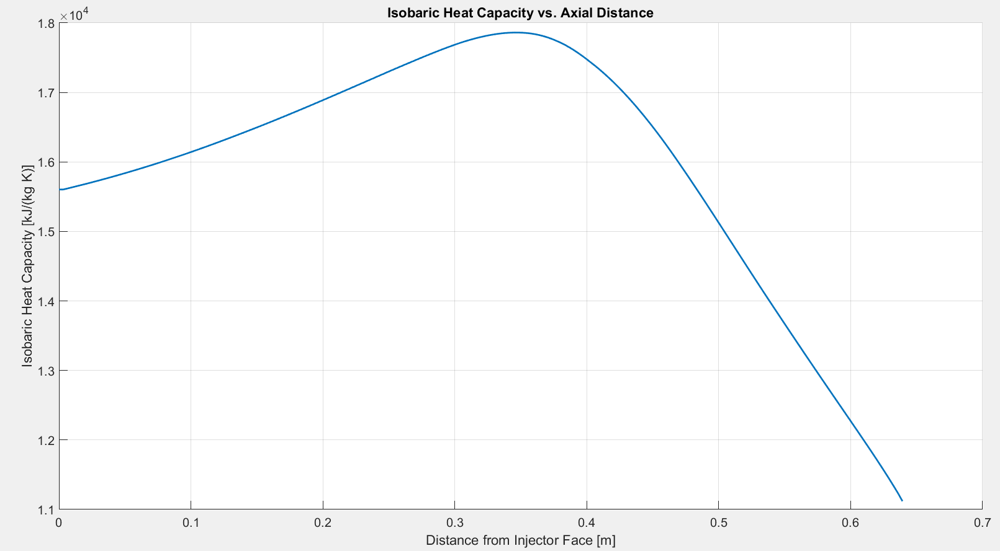
Figure 6.1.9: Coolant Isobaric Heat Capacity
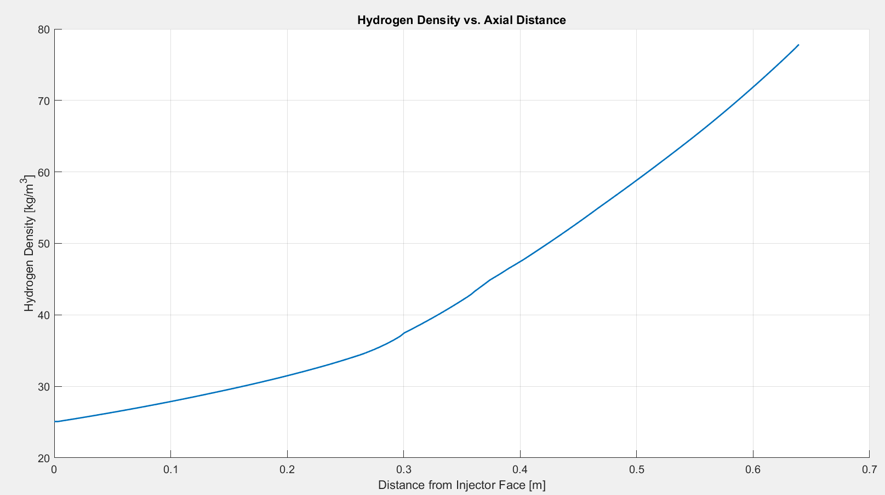
Figure 6.1.10: Coolant Density
After validating that the model on this website produces results in good agreement with published values, the next step was to re-run the analysis for the large throat configuration at the 104% power level. The following plots compare results from the large throat and small throat configurations.
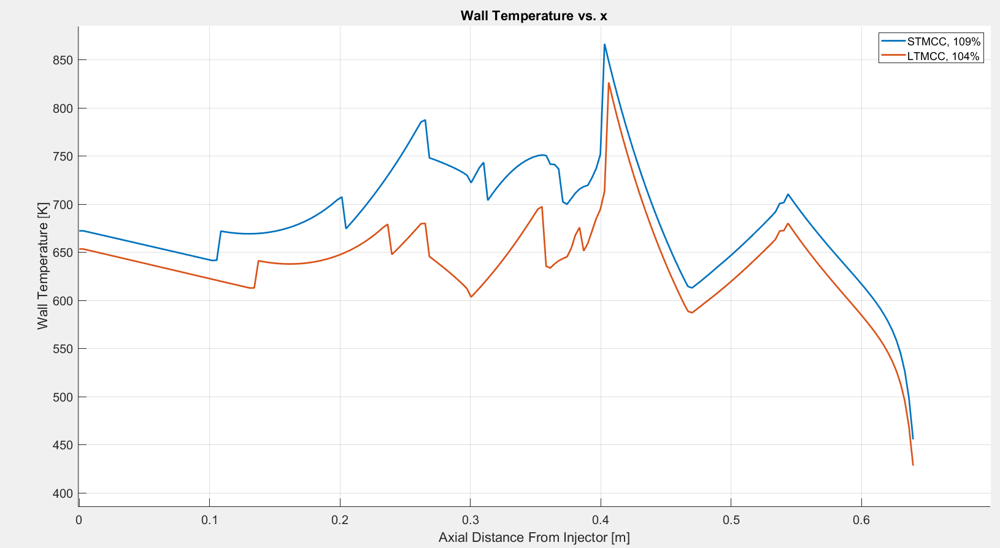
Figure 6.1.11: LT and ST MCC Hot Wall Temperatures. Spikes in temperature correspond to changes in channel geometry.
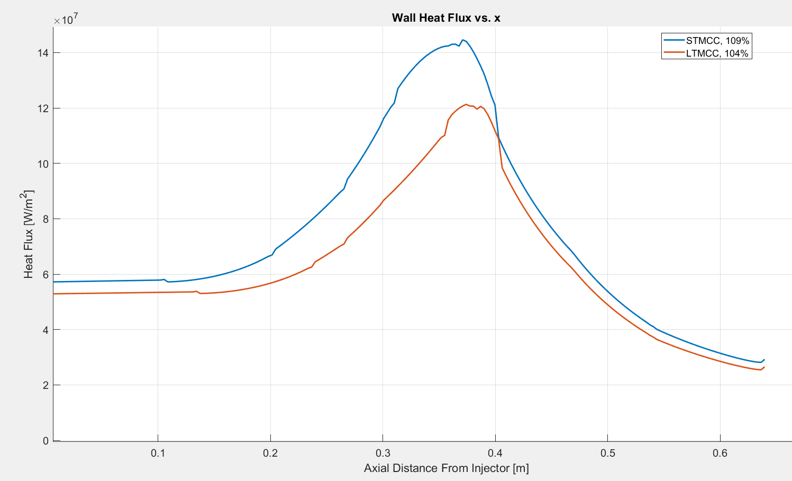
Figure 6.1.12: LT and ST MCC Hot Wall Heat Flux
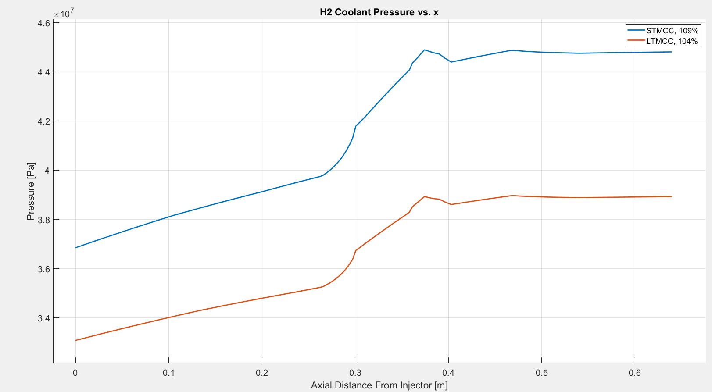
Figure 6.1.13: LT and ST MCC Coolant Pressure
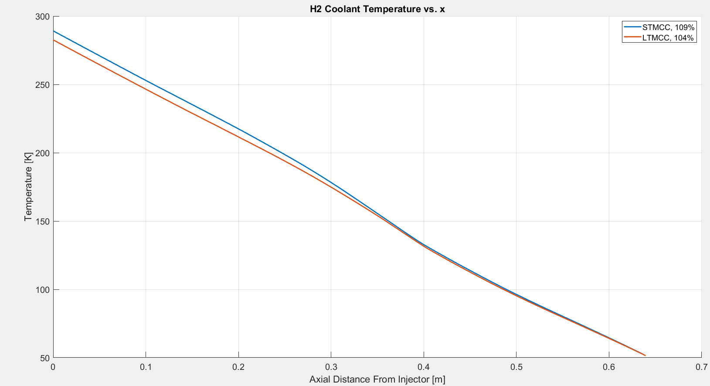
Figure 6.1.14: LT and ST MCC Coolant Temperature
| This Model | Boeing [2] | Wang[72] | |
|---|---|---|---|
| Peak Hot Wall Temperature, $K$ | 826 | 811 | 852 |
| Peak Heat Flux, $MW/m^2$ | 121 | - | - |
| Coolant $\Delta P$, $MPa$ | 5.9 | 8.28 | - |
| Coolant $\Delta T$, $K$ | 231 | 212 | - |
Table 5.1.2: Predictions for Large Throat Configuration at 104.5% Power Level
The plots above clearly indicate the difference in performance between the large throat and standard throat configurations. Adding 40 additional coolant channels and increasing the cross-sectional area of throat area by 12 percent allows the LTMCC to operate at a “greatly reduced”[56] temperature and heat flux as compared to the standard throat configuration.